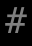
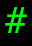

記号 # のモンスター / Monsters with symbol #
画面上で # と表示されるモンスター（20 種）。
Monsters displayed as # on screen (20).
← 記号から探す / Browse by symbol · モンスター索引 / Index
| ID | 記号 / Sym | 名前 / Name | 階層 / Lv | 希少度 / Rar | 速度 / Spd | 体力 / HP | AC | 経験値 / Exp |
|---|---|---|---|---|---|---|---|---|
| 316 | よろめき歩く塊 Shambling mound |
18 | 2 | 110 | 20d6 | 16 | 75 | |
| 326 | スタンウォール Stunwall |
18 | 5 | 110 | 4d8 | 25 | 50 | |
| 329 | フオルン Huorn |
19 | 1 | 110 | 50d10 | 45 | 75 | |
| 336 | 動く岩 Livingstone |
20 | 4 | 110 | 6d8 | 28 | 30 | |
| 884 | 有毒ガス Noxious fume |
20 | 4 | 90 | 3d3 | 37 | 15 | |
| 206 |  |
『柳じじい』 Old Man Willow |
22 | 5 | 110 | 23d23 | 20 | 150 |
| 365 | 吸血霧 Vampiric mist |
22 | 1 | 110 | 10d8 | 55 | 40 | |
| 1327 | パックンフラワー Piranha Plant |
22 | 2 | 115 | 20d10 | 20 | 300 | |
| 396 | ザイクロトル族 Xiclotlan |
25 | 2 | 110 | 25d25 | 60 | 60 | |
| 426 | ローパー Roper |
27 | 5 | 115 | 70d12 | 60 | 235 | |
| 448 | レッサー・ウォールモンスター Lesser wall monster |
28 | 4 | 110 | 13d8 | 75 | 60 | |
| 898 | 花崗岩の壁 Granite wall |
30 | 2 | 100 | 15d15 | 120 | 350 | |
| 1250 | 可燃性ガス Flammable gas |
30 | 4 | 90 | 3d3 | 37 | 15 | |
| 552 | 霧の巨人 Mist giant |
36 | 2 | 120 | 35d20 | 50 | 450 | |
| 625 | 不可解な煙霧 Weird fume |
40 | 2 | 120 | 35d10 | 40 | 800 | |
| 677 | シュブ=ニグラスの黒い仔山羊 Dark young of Shub-Niggurath |
43 | 2 | 120 | 12d100 | 75 | 5000 | |
| 708 |  |
エント Ent |
46 | 3 | 120 | 40d100 | 120 | 12500 |
| 713 | 木の鬚『ファンゴルン』 Fangorn |
47 | 3 | 120 | 50d100 | 120 | 13500 | |
| 718 | 長老岩 Greater wall monster |
50 | 4 | 120 | 15d40 | 80 | 500 | |
| 761 | ナイアルラトホテップの化身『アフトゥ』 Ahtu, Avatar of Nyarlathotep |
56 | 3 | 130 | 50d110 | 120 | 22500 |
🤖 このページは
lib/edit/MonraceDefinitions.jsoncから自動生成されています。手動で編集しないでください — 変更は次回の再生成で上書きされます。 This page is auto-generated fromlib/edit/MonraceDefinitions.jsonc. Do not edit by hand — changes are overwritten on regeneration. 生成 / Generated: 2026-07-04 04:05 UTC · hengband5ebae9734·tools/generate-wiki.mjs